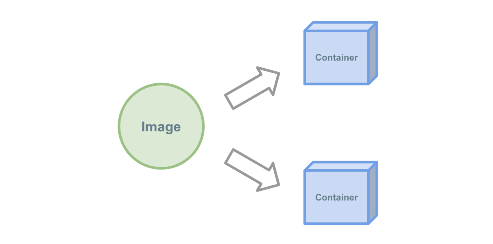
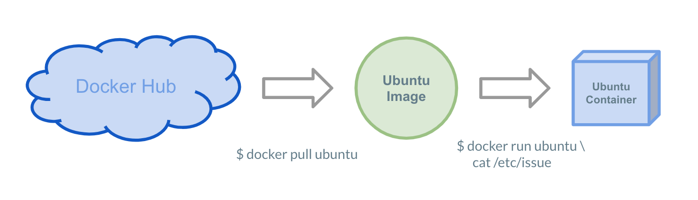

image
Docker Imageとは¶

Imageは"環境のスナップショット" としての役割を持っています。
例えばCentOSやUbuntuのようなOSからNginxやMySQLのようなソフトウェア、PHPやRubyのようなランタイムなどの環境を提供してくれます。
この章ではハンズオン形式でDocker Imageについて学んでいきます。
Ubuntuを動かす¶
はじめに、Docker上でUbuntuを動かしてみましょう。
先程はNginxのようなソフトウェアを動かしましたが、DockerではUbuntuのようなOSも立ち上げることも可能です。
ImageのPull¶

Docker Image はDockerの公式が DockerHub と呼ばれるサービス上で様々なOS・ソフトウェアを公開しています。
DockerHub上で公開されているUbuntuを今回は使用します。
まずはUbuntuのDocker ImageをDockerHub上から取得します。
docker pull ubuntu でDockerHub上からローカルへ取得しましょう。
$ docker pull ubuntu Using default tag: latest latest: Pulling from library/ubuntu 898c46f3b1a1: Pull complete 63366dfa0a50: Pull complete 041d4cd74a92: Pull complete 6e1bee0f8701: Pull complete Digest: sha256:017eef0b616011647b269b5c65826e2e2ebddbe5d1f8c1e56b3599fb14fabec8 Status: Downloaded newer image for ubuntu:latest
Ubuntu上でコマンドを動かす¶

docker run でImage上でコマンドを動かすことができます。
先程取得したubuntuイメージ上でコマンドを実行して、Ubuntuが動いてることを確かめましょう。
ホストOSがAlpineLinuxで動いていることを確認
$ cat /etc/issue Welcome to Alpine Linux 3.9 Kernel \r on an \m (\l)
UbuntuのDockerイメージを起動して、ちゃんとUbuntuが動いていることを確認
$ docker run ubuntu cat /etc/issue Ubuntu 18.04.1 LTS
bashを使用する¶
次はbashを使用してみましょう。
bash のような対話的な入力が必要なプロセスは -i -t オプションを使用する必要があります。
$ docker run -i -t ubuntu bash #
bashの中に入れたら試しにコマンドを打って、ホストと異なる環境か確かめてみましょう。
# cat /etc/issue Ubuntu 18.04.1 LTS
# env : PWD=/ HOME=/root TERM=xterm SHLVL=1 PATH=/usr/local/sbin:/usr/local/bin:/usr/sbin:/usr/bin:/sbin:/bin _=/usr/bin/env
ホストとコンテナ内で異なる環境ということが確認できましたね。
exit コマンドでコンテナから脱出しましょう。
# exit $
オプションについて
-i はコンテナの標準入力を有効化、 -t はttyを有効化するためのオプションです。
docker run -it ... のように省略することも可能です。
好きな言語でDockerを起動する¶
ここまでnginxとubuntuを起動してきましたが、他のDocker Imageも試してみましょう。
試しにあなたが好きなプログラミング言語があるか探してみましょう！
docker search <LANGUAGE> で探すことができます。
ここでは試しにRubyを探してみます。
$ docker search ruby NAME DESCRIPTION STARS OFFICIAL AUTOMATED ruby Ruby is a dynamic, reflective, object-orient… 1621 [OK] redmine Redmine is a flexible project management web… 712 [OK] jruby JRuby (http://www.jruby.org) is an implement… 82 [OK] circleci/ruby Ruby is a dynamic, reflective, object-orient… 56 starefossen/ruby-node Docker Image with Ruby and Node.js installed 26 [OK] :
復数のRubyにマッチするイメージが見つかりました。
さて、次は見つけたイメージへコマンドを与えてみましょう。
今回は「標準出力を出力する」ようにコマンドを与えてみましょう。
$ docker run ruby ruby -e 'puts "Hello, Docker!"' Unable to find image 'ruby:latest' locally latest: Pulling from library/ruby 741437d97401: Pull complete 34d8874714d7: Pull complete 0a108aa26679: Pull complete 7f0334c36886: Pull complete 49ea0d2b5c48: Pull complete 5238ef6d63d6: Pull complete 6c57ebbe7911: Pull complete 6cf2f39ff067: Pull complete Digest: sha256:20830a7eb2c48390644cc233fd17520794e5bfce523516fc904068930de16a45 Status: Downloaded newer image for ruby:latest HelloDocker!
Pullの省略
docker pull <イメージ名> で取得していないDocker Imageを docker run の際に指定すると自動的にDockerHubへ取得しに行きます。
基本的に docker pull <イメージ名> は省略して使用することが多いですが、省略した場合にも暗黙的に pull を行っていることを意識して使用すると良いでしょう。
他のImageでの使用例¶
どんなイメージがあるのか試してみましょう
CentOS¶
$ docker run -it centos bash Unable to find image 'centos:latest' locally latest: Pulling from library/centos 8ba884070f61: Pull complete Digest: sha256:8d487d68857f5bc9595793279b33d082b03713341ddec91054382641d14db861 Status: Downloaded newer image for centos:latest # cat /etc/redhat-release CentOS Linux release 7.6.1810 (Core) # exit
Node.js¶
$ docker run node node --version
v11.11.0
$ docker run node node -p 'console.log("hoge")'
hoge
Python¶
$ docker run python python --version
Python 3.7.2
$ docker run python python -c 'print("hoge")'
hoge
tagを使用する¶
DockerImageにはtagという"ラベル"の役割を持つ機能があります。
基本的にバージョン管理を目的に使用されることが多いです。
例えばPythonの2.7を使いたい場合、単純にpullしてrunをすると3.7が立ち上がります(2019年3月現在)。
$ docker run python python --version Python 3.7.2
公式イメージで2.7がホストされていないのか確認してみましょう。
https://hub.docker.com/_/python

2.7 というタグが存在することが確認できました。
早速走らせてPythonの2.7の環境が手に入るか確認しましょう。
$ docker run python:2.7 python --version Python 2.7.16
Tagの命名規則
Dockerは公式で3パターンの命名規則を定義しています。
- Docker公式のイメージ
<イメージ名>:<タグ>
- ユーザーが作成したイメージ
<ユーザー名>/<イメージ名>:<タグ>
- 非公式レジストリのイメージ
<レジストリ名>/<ユーザー名>/<イメージ名>:<タグ>
:<タグ> の指定をしない場合は :latest へ自動的に保管されます。
まとめ¶
- Docker Imageは特定の環境のスナップショットで、Imageを起動することで環境を再現することができる
- DockerHubから様々なDocker Imageを取得することができる
- tagを指定することで特定のバージョンを使用することができる